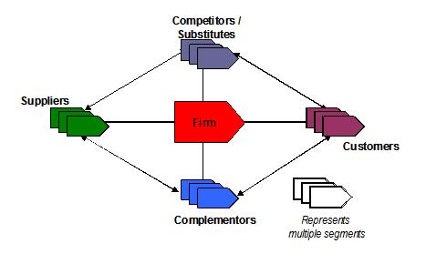
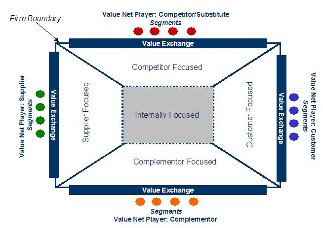
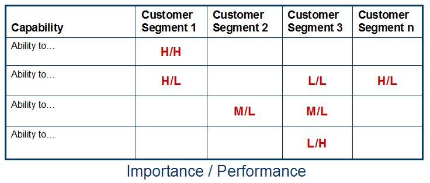

| Artifact: Capability Model Assessment (BUS 415) |
 |
|
| The purpose of the Capability Model Assessment is to assess a client’s current capabilities in order to identify areas for improvement, augmentation and leverage. |
| Main Description | The Capability Model Assessment Work Product creates:
The underlying framework that guides the identification of capabilities in the model is the Value Net (Figure 1), initially defined in the book Co-opetition [see (1)] and greatly enhanced by IBM. The value net divides a firm’s external interactions into four quadrants or Players – Customers, Suppliers, Competitors and Complementors. The Player categories in the value net represent the starting point for the identification of the firm’s capabilities. 
For engagements focused on internal Players such as employees or other divisions (intra-company), simply use the targeted groups/divisions as the starting point for the identification of capabilities. Within each Player category there are segments that the firm exchanges value with – customer, supplier, partner and even competitor (co-opetition) segments. Segments are defined as collections of firms (B2B) or groups of individuals (B2C) that have similar wants and needs from the perspective of the firm. A Value Exchange has two parts. The firm offers a Value Proposition to a segment and receives Value Capture in return. Figure 2 represents another type of value net illustration that will be used from here forward to assist in the identification and categorization of current capabilities. This illustration is not intended to be the client deliverable for this assessment, but a tool to:

To help identify capabilities, the firm (as defined in Figure 2 as within the “Firm Boundary”) is divided into five areas, four of which are externally focused and one that is internally focused:
In some cases, capabilities will both directly support value exchanges externally and support other internal capabilities. For example, an airline’s capability, “Ability to provide best-in-class baggage handling” may directly support the value proposition (value exchange), “No lost baggage” and the internal capability, “Ability to provide excellent customer service.” Once the current capabilities have been identified, the model (capabilities) is assessed against best practices or internal expectations. Capability gaps are identified and, along with existing capabilities, assessed in terms of performance (Gaps are obviously the lowest in performance) and importance. The capabilities are assessed at a “white-box” level by evaluating the performance and importance of the support they provide. The assessment is primarily performed at this level due to the large number of capabilities in the “as-is” model and the time involved with assessing each capability at a black-box (capability enabler) level, e.g., knowledge, process, technology and organizational components. This work product creates a model of the current capabilities in either a tabular or graphical format. (1) A. M. Brandenburger and B. J. Nalebuff, Co-opetition, Currency Doubleday, 1996 |
|---|---|
| Notation | The consulting team can use the illustration in Figure 3 to help parse the work and to identify starting points, gaps, etc.
In most engagements multiple segments are involved in the assessment. The table in Figure 4 can be used to evaluate a capability’s performance against multiple segments. The table mentions only customer segments, however, any type of Value Net Player segment can be listed.
Additional notation can be found under Section 5 of this document, Development Approach.  |
| Examples |
|---|
This work product can be extremely large and complex depending upon the scope of the engagement. Thus, the attention and time spent on Step 1, Refine and clarify the Focus Definition (scope of activities that will be assessed), is crucial to the successful completion of this work product in the time allotted. Negligence in Step 1 could result in missed deadlines and, worse yet, a focus on areas that are not of primary concern to the engagement or the client. There are many tools and techniques that already exist that can be employed to help in the assessment. The Dynamic Stability Model is a cognitive model that categorizes the business capabilities based on the nature of the Process and Product Change, i.e., Mass Production, Mass Customization, Invention or Continuous Improvement. An understanding of these generic organization, process, technology and knowledge characteristics associated with each capability position can be useful in assessing alignment of Capabilities with strategy. Any Business Transformation/Business Process Reengineering tools and techniques can be used to assist in the identification and assessment of capabilities. However, these tools are usually more detailed and lower level in their coverage, so avoid be “bogged down” with low-level analysis.
Capability Model Assessment requires good industry knowledge coupled with creativity in synthesizing a client’s
business objectives and business issues. |
| Impact of not having | The engagement team and client will not have a current, "As-is", view of the client’s capabilities. This will restrict the team’s ability to leverage existing strengths and address existing weaknesses. |
|---|---|
| Reasons for not needing | The following are instances where this work product may not be needed:
|
| Checklists | |
|---|---|
| Guidelines | |
| Supporting Materials | |
| Estimation Considerations |
| © Copyright IBM Corp. 1987, 2012 All Rights Reserved Property of IBM These materials are intended only for use as part of an IBM engagement |